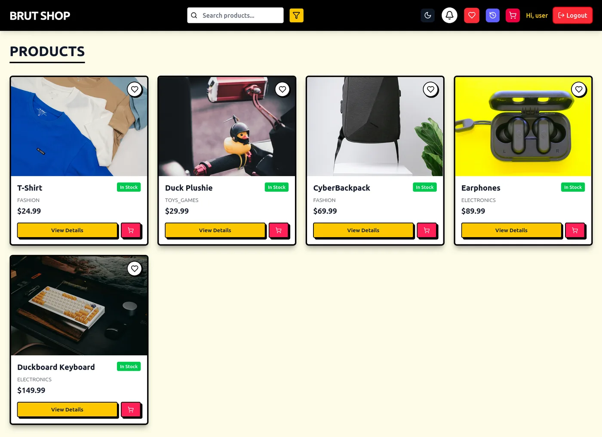
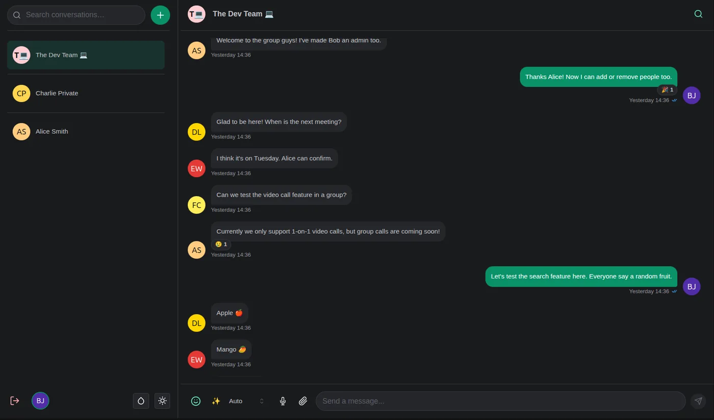
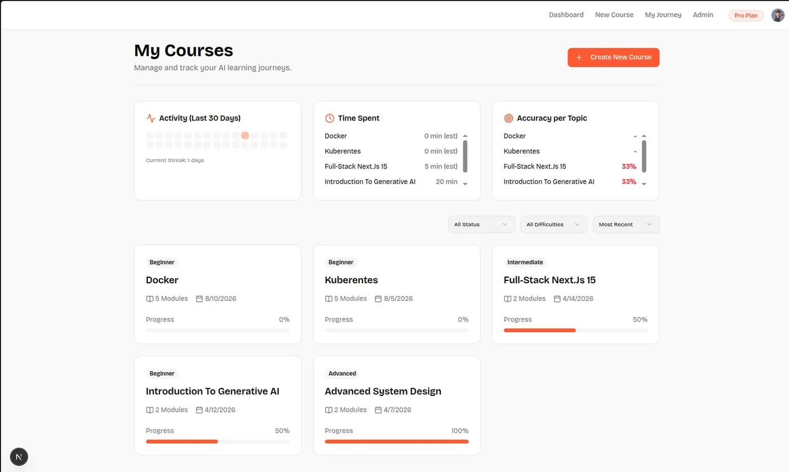

The ANISH-K2026 is Anish Kumar, a full stack and systems developer studying B.Tech at IIIT Naya Raipur, Raipur, India. It takes in a problem and puts out working software, from a Redis-compatible server in plain Java to an Android app that diagnoses crop disease with no internet.
The device prefers writing the thing over importing it, and measures what it builds. Two internships are on record: Samsung PRISM R&D and Aparsoft.
Figure 3-1. Die PhotoAnish Kumar, handle Sarcastic-Soul. Printed in grayscale; hover or tap to power on.
“Jack of all trades, master of none, though oftentimes better than master of one.”
Pin Configuration (Top View)
RQFN-40 · 4 groups
Figure 3-2. ANISH-K2026 PinoutPins are skills; J1 lists the projects they drive. Thermal view colours each pin by how many projects use it.
Each pin is one skill, grouped by side of the package. Press a pin name to probe it on the pinout.
Table 4-1. Pin Functions
No.
Name and function
Used in
No.
Name and function
Used in
P = power pin. G = ground pin. Both are jokes; the other 38 are not.
4.1NC Pins (no internal connection on this package)
Also on the die, but not bonded out to a pin on this drawing:
5Specifications
5.1Absolute Maximum Ratings(1)
Min
Max
Unit
Meetings per day
0
3
meetings
Supply, VCHAI
1
4
cups/day
Open browser tabs
—
120
tabs
“Quick sync” length
—
15
min
Third-party dependencies, Radish
0
0
deps
(1) Stresses beyond these may cause permanent damage to the developer. Every row is a joke except the Radish dependency count, which is real.
5.2Thermal Information
Turn on Thermal view on the pinout to see where the heat goes. The hottest pins are the ones most projects lean on:
PGSQL, REDIS and REACT: 4 projects each
JAVA and DOCKER: 3 projects each
VCC (chai): all 10, by design
Fan-out counts come from the same data as Table 4-1.
5.3Electrical Characteristics
Measured on real projects. Test conditions are the ones stated in each project’s repository.
Parameter
Test conditions
Min
Typ
Max
Unit
RADISH (REDIS-COMPATIBLE SERVER, JAVA NIO)
GET throughput
redis-benchmark, 50 clients, AOF on
175,000
req/s
SET throughput
redis-benchmark, 50 clients, AOF on
144,000
req/s
Latency, p50
GET / SET / PING, -c 50 -n 100000
0.151
ms
TRIMURL (LINK SHORTENER ON KUBERNETES)
Concurrent users
k6 load test
4,000
users
Backend pods
Kubernetes autoscaling
3
15
pods
CROPDOC (OFFLINE ANDROID APP)
Conditions detected
On-device MobileNetV2, no network
38
conditions
Crops covered
Same model
14
crops
UI languages
Including Hindi, Bengali, Urdu
11
languages
OTHER
Model providers (Codemon)
Bring your own API key
~185
providers
Response time (BrutShop)
Redis cache in front of PostgreSQL
200
ms
Faster loads (ChatApp)
IndexedDB stale-while-revalidate cache
45
%
ANISH-K2026SSDS2026 – OCTOBER 2026
6Detailed Description
The ANISH-K2026 covers many trades on purpose: systems code in Java and Rust, backends in Spring Boot and FastAPI, frontends in React and Next.js, mobile in React Native, and AI pipelines in LangGraph. It has three functional modes on record.
Problem solving
600+
DSA problems solved across LeetCode and Codeforces, with a Codeforces peak rating above 1300.
Competition
1st
E-Cell Hackathon winner. Won the inter-college hackathon with a full-stack build made against the clock.
Leadership
200+
Coding Club core member. Ran a 3-day coding fest with 13 events and over 200 active participants.
Table 6-1. Device Functional Modes
7Application and Implementation
The circuits below are real projects. Each shows its data path as a block diagram; press Send a request to trace one through. U1, in black, marks the part the device built itself.
Speaks RESP2 and RESP3, so redis-cli and normal Redis client libraries connect to it unchanged. One Java NIO event loop serves every client, and a background thread handles AOF writes so the hot path never waits on disk.
All five commands stay between 144K and 175K requests per second with a median latency of 0.151 ms. AOF everysec, RDB snapshots and LRU eviction were all on during the run.
7.2Codemon: Terminal Coding Agent
PromptModel (~185 providers)Tool call
U1 · Permission gateDiff shownDisk
SessionSQLiteResume · Rewind
Figure 7-3. Codemon Typical Application
Design Requirements
Parameter
Value
Install
One binary built with Bun, no Node or npm
Tool permissions
4 classes: read, write, bash, network
Extras
MCP servers, sub-agents, plan mode, headless CI mode
Detailed Design Procedure
Streams answers, shows every file edit as a diff before it touches disk, and asks before running anything risky. Sessions live in SQLite, so you can resume one or roll back all of its file changes.
An Android app for farmers working where there is no data connection. The on-device model names the disease, then the app suggests a targeted treatment and works out the dose, so farmers spray less and spray the right thing.
(1) Free-tier host; the first load can take about 30 s.

Figure 7-9. BrutShop

Figure 7-10. ChatApp

Figure 7-11. SyllabAI
ANISH-K2026SSDS2026 – OCTOBER 2026
8Revision History
Every role the device has held, drawn as a timing diagram. Move across it (or focus it and use the arrow keys) to see which lines were high in a given month.
Figure 8-1. Role Timing, September 2025 to October 2026
Contributed to activity-frames, the engine behind Nocta, which turns local screen activity into structured frames that AI agents can read.
Worked on the Python and Model Context Protocol (MCP) code that compiles sessions, so agents can replay a workflow and build context without spending tokens.
Python · MCP · SQLite · React · TypeScript
Revision B · Software Engineering InternJUN 2026 – AUG 2026
Samsung PRISM R&D Institute · Bangalore (remote) · Certificate
Built Guide Weave, an AI tool that turns product manuals into step-by-step visual guides, using a multimodal RAG pipeline with ChromaDB to pull matching text and images from the manuals.
Ran the LLM locally so no data left the machine, and wrote benchmarks to raise retrieval accuracy and cut response time.
IMPORTANT NOTICE. Sarcastic Semiconductor is a joke company and the ANISH-K2026 is not for sale. The developer, the projects, the skills and every measured number in this data sheet are real.